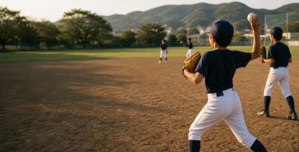

堀 茂
68歳 / 代表・責任者
大原中学校・山田中学校を拠点に、週3日活動する神戸市北区の軟式野球クラブ。初心者も経験者も、自分で考えながら野球に向き合えます。
見学・体験について
WEEKLY SCHEDULE
水・土・日を基本に、いつものグラウンドで活動しています。
土日は試合などにより、時間・場所が変更になる場合があります。参加前にInstagramまたは長濱までご確認ください。
OUR APPROACH
厳しい管理だけに頼らず、野球本来の楽しさを出発点にします。試合で課題を見つけ、平日の練習で自分なりに考えて修正し、もう一度試す。その循環を大切にします。
活動時間を適切に整え、睡眠や学業、学校生活との両立も応援します。初心者にも、野球を続けてきた選手にも、次の一歩を考えられる環境をつくります。
THE PEOPLE
地域で野球に関わってきたスタッフが、現場と運営の両面からチームを支えます。年齢は2026年度満年齢です。
68歳 / 代表・責任者
53歳 / 副代表・連絡担当
24歳 / 副代表兼指導者・監督
24歳 / 指導者・コーチ
23歳 / 指導者・コーチ
20歳 / 指導者・コーチ
22歳 / 指導者・コーチ
22歳 / 指導者・コーチ
FEE
月会費2,500円
コベカツ補助が適用される場合は、家庭負担1,000円を想定しています。補助条件やユニフォーム等の購入費用はお問い合わせください。
FOR PARENTS
送迎・車出し・お茶当番は
基本なし
活動場所へは各自集合・現地解散。移動は公共交通機関を基本とします。試合・遠征時の扱いは事前にご確認ください。
VISIT & TRY
小学6年生から中学2年生まで、初心者も歓迎しています。事前にご連絡のうえ、運動できる服装でお越しください。持ち物などの詳細は、参加前にご案内します。
JOINING DOCUMENTS
入部を検討する方に向けて、規約と各種書式を公開しています。内容を確認してから、見学・体験や入部について長濱までご連絡ください。
オンラインの入会届・体験希望フォームは準備中です。公開までの間は、メールまたはInstagramからご連絡ください。
LATEST UPDATES
練習の様子や予定変更など、日々の情報は公式Instagramで更新します。土日の活動は変更になる場合があるため、体験前には最新投稿をご確認ください。
CONTACT
見学・体験の事前連絡、活動予定、費用や持ち物についてのお問い合わせを受け付けています。